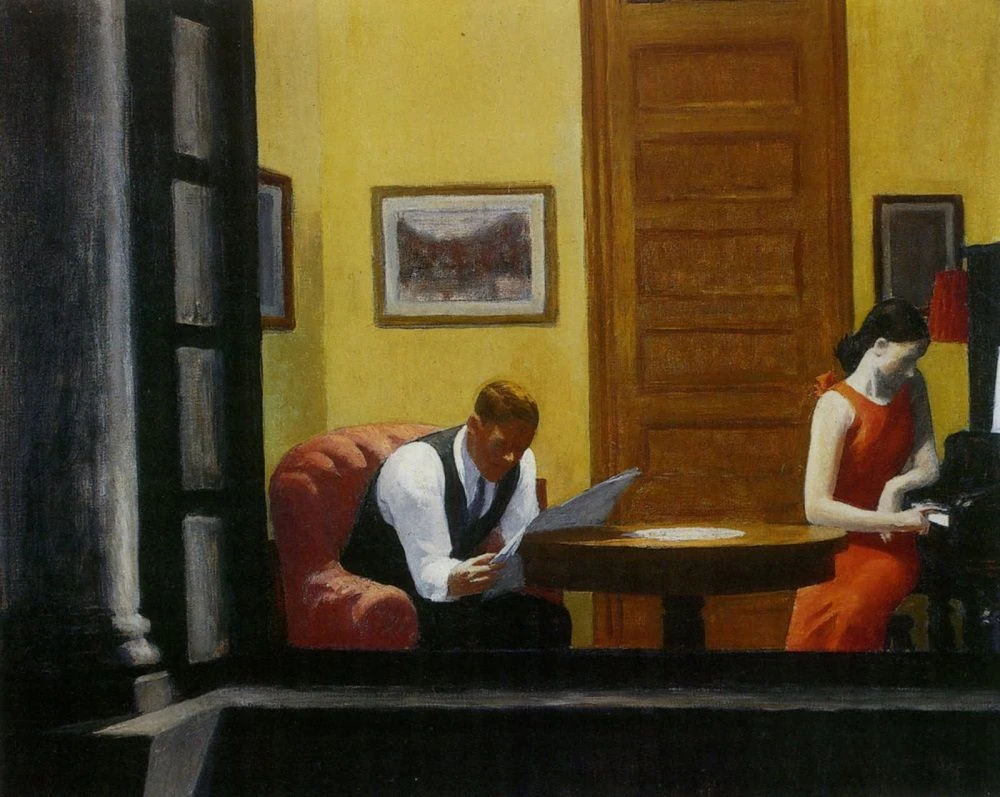

written by Roni Kobrosly on 2026-06-28

Some art engages me purely intellectually, some hits me emotionally, but Edward Hopper's art consistently lights up up for me. This is a deep-dive on his painting named "Room in New York", from 1932.
We appear to be looking in on two people in an apartment. The people don't seem to be aware that they are being watched; this is a small private moment for them. Edward Hopper said of this piece: "It was suggested by glimpses of lighted interiors seen as I walked along the city streets at night, probably near the district where I live (Washington Square), although it's no particular street or house, but it is rather a synthesis of many impressions.“ It indeed seems to be nighttime based on the lack of light we see outside the window. The only source of light comes from the room; we don't see any hint of street lights or the moon. It's as if this urban-looking apartment is situated within a dark, canopy-covered forest.
Beyond Hopper's hint that this is an mishmash of memories of evening walks around Washington Square, we don't have any other information about the building. It looks like a middle-class and probably a multi-story residential building. The room itself looks cramped. It seems there's only a few feet of distance between the table and the piano, and the room looks like it's no more than 12 feet wide. There are three pictures on the wall, although we can't make anything out about them. One of them appears to be of a lake or a river, but there are no details. The piano is a black upright.
It's worth pausing on the colors here, because Hopper does a lot with a fairly small palette. The whole room is bathed in a warm, mustard yellow that covers most of the wall space. It's the kind of yellow you get from a dusty electric lamp, and while it should feel cozy, there's something a little flat and artificial about it too. Against all that yellow, Hopper places two vivid punches of red: the woman's dress and the plush armchair the man is sinking into. I find it interesting that the two reds are kept on opposite sides of the canvas, one with each person, almost as if the color quietly connects them even while their bodies and their attention don't. Everything else is muted and heavy by comparison. The door, the table, and the piano are all deep browns and blacks, and the entire bottom edge of the painting falls off into near-total shadow, which is really the darkness we're looking across to peer into the room in the first place. That contrast, the warm glow of the interior boxed in on all sides by black, is a big part of why the scene manages to feel both inviting and as lonely as death at the same time.
They appear to be comfortable with each other based on their casual demeanor. They look to be in their 20s or 30s. Maybe they are a married couple? We can imagine they don't have any children because they seem to be in a relaxed state. Or maybe their children are asleep. The woman is wearing a simple, red 1930's day dress. Based on the outfit, the man is a professional of some kind. Maybe a banker. Maybe he sells insurance. Who knows? We can't make out any details about their expressions, other than that they're both looking down with shadowed faces.
So what exactly are they doing? The man is leaning forward over a newspaper, gripping it in both hands, completely absorbed in it. The woman has turned away from him toward the black piano, and she's pressing down on a single key with one finger. She isn't really playing. It's an idle, almost absent-minded gesture, the kind of thing you do when you're bored and restless and looking for some small way to break the silence. The two of them are only a few feet apart, but neither one is looking at the other. There's no conversation here, no eye contact, no touch. Each of them has quietly retreated into their own separate world.
This is what I keep coming back to with this painting. On its surface it's a warm, cozy, domestic scene: the yellow walls, the soft interior glow, a couple spending an ordinary evening at home. But the longer I sit with it, the more a quiet loneliness rises to the surface. These two people share a life together, maybe a marriage, maybe years of history, and yet in this particular moment they've each drifted off into their own private world. The closeness of the small room only makes the distance between them feel bigger.